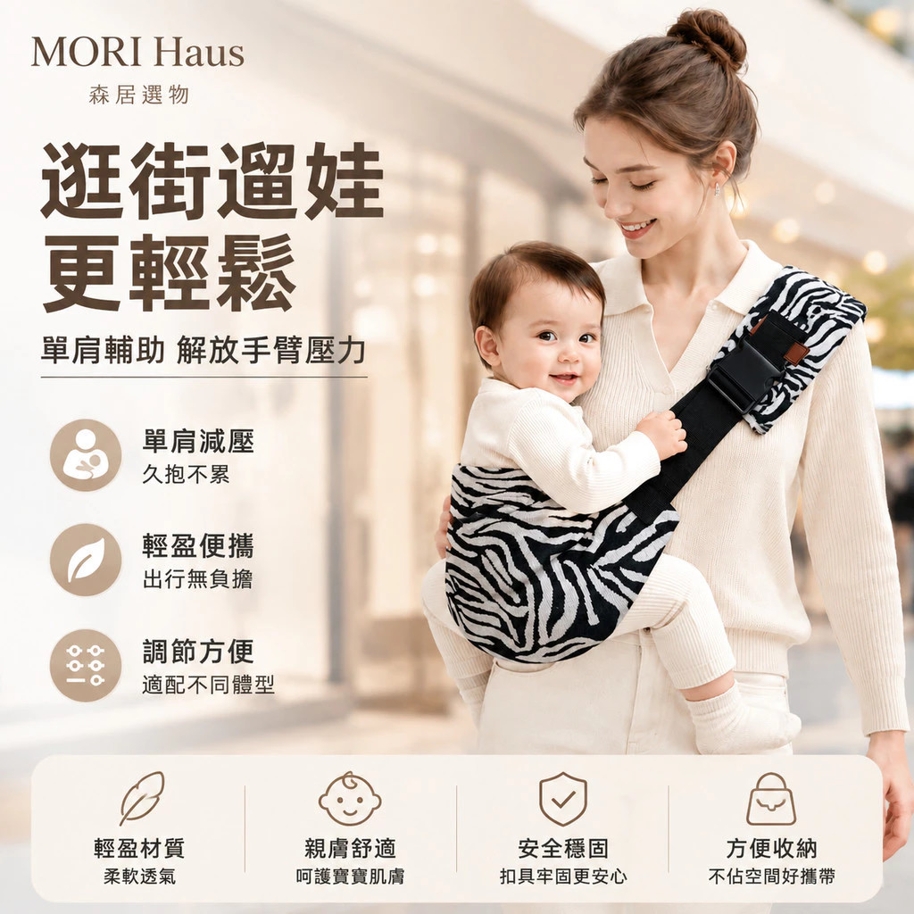

哺乳
哺乳枕（月亮枕）二合一款
📅 出生即可使用，主力期 0–6 個月
坐餵時環抱式支撐寶寶，減少手臂與腰部壓力；15° 斜面可躺餵。寶寶吐奶次數因此減少（奶不易逆流）。4–8 個月後可轉用為學坐輔助枕。
用品
蝦皮購買
⚠️ 注意：哺乳枕是給媽媽用的
不可讓寶寶直接枕著哺乳枕睡覺，有窒息風險。哺乳結束後應將寶寶移至安全睡眠環境。
坐餵 vs 躺餵比較
| 用途 | 枕型 | 說明 |
|---|---|---|
| 坐餵（主） | C 型 / 月亮型（本款） | 環抱式讓寶寶趴臥，解放雙手，護腰減壓 |
| 躺餵 | 15° 斜面款（本款兼具） | 側躺餵奶，減少腰痠背痛 |
| U 型 | U 型枕 | 雙側手臂支撐，適合雙胞胎 |
挑選重點
| 項目 | 建議 |
|---|---|
| 支撐性 | 不能一壓就扁，否則手臂仍需出力 |
| 材質 | 純棉或天絲，夏季尤其重要 |
| 清潔 | 枕套可拆洗，枕芯可水洗更佳 |
| 功能 | 二合一坐餵＋躺餵，CP 值高 |
PTT 社群討論
「坐著餵奶長時間腰酸，哺乳枕大幅減壓，再也不覺得喂奶是辛苦的事。寶寶吐奶次數也減少了，斜面支撐讓奶不易逆流。」
「後期（4–8 個月）可當學坐輔助枕，延長使用週期。少數媽媽用兩三次就放棄，多為身形或慣用姿勢不合，建議生產前先試抱感。」
洗澡
洗屁屁浴架
📅 新生兒即可使用
新生兒期頸部無力，浴架可穩定支撐。大人必須全程在旁，不可離開。
用品
蝦皮購買
使用月齡參考
| 月齡 | 使用狀況 |
|---|---|
| 出生–2個月 | 可用，全程陪同，注意頸部支撐角度 |
| 3–6個月 | 頸部稍硬，最穩定好用的主力期 |
| 6個月–1歲 | 體重 9kg 內可繼續使用 |
| 1–1.5歲 | 能站立後自然退役 |
PTT 社群討論
「單手洗屁屁，解放另一隻手沖水，大幅降低媽媽手。特別適合無後援、一個人帶小孩的家庭。」
「下方矽膠吸盤易發霉，需定期清潔。要挑對洗手台尺寸，不是所有洗手台都合用。大人務必全程在旁。」
頭型與睡姿
⚠️ 醫生警告：6個月前請勿使用定型枕
新生兒科醫生與台灣衛福部均不建議。4個月前頸肌未成熟，厚枕可能折到氣管；窒息時大腦無法發出自救指令，有致命風險。
✅ 醫生推薦替代方法（0–3個月黃金期）
清醒時多「趴趴時間」· 交替左右方向餵奶 · 睡覺時交替頭朝方向。效果比定型枕更好且無風險。
社群討論
「PTT 新生兒科醫生公開批評：不肖廠商透過錯誤觀念誘導購買，提高小孩死亡率。頭型主要由遺傳決定，前囟門 1–1.5 歲才完全閉合，人工塑形效果存疑。」
「台北慈濟醫院新生兒科主任趙露露：6個月前避免使用枕頭；4個月前肌肉未成熟，厚枕頭會妨礙自救。台灣衛福部：嬰兒枕對防側翻、顧頭型皆無實證依據。」
外出裝備
折疊床媽咪包（二合一後背包）
📅 出生後外出立即使用，主力期 0–12 個月
新生兒期外出東西最多，建議備妥大容量媽媽包。本款後背包展開後可變成折疊床，適合外宿或長途旅行臨時使用。
規格亮點
| 功能 | 說明 |
|---|---|
| 後背包 | 雙肩大容量，多隔層收納 |
| 奶瓶保溫格 | 側邊保溫口袋，可放 2 支 |
| 折疊床 | 附加厚隔尿墊，適合換尿布/短暫躺臥 |
| 推車掛勾 | 一對童車掛勾附贈 |
媽咪包類型比較
| 折疊床後背包 | 一般後背包 | 側背包 | |
|---|---|---|---|
| 容量 | 大（床佔部分空間） | 大且完整利用 | 中等 |
| 單手取物 | 不便 | 不便 | 方便 |
| 附加功能 | 折疊床、換尿布墊 | 保溫袋 | 掛勾 |
| 最適情境 | 外宿、長途旅行 | 日常外出 | 短程散步 |
用品
蝦皮購買
⚠️ 折疊床注意事項
• 折疊床結構通常不夠硬挺，僅供臨時換尿布或短暫躺臥，不能取代正式嬰兒床
• 確認折疊鎖固機構穩固，避免寶寶在裡面時意外收合
• 不建議讓寶寶在折疊床內長時間睡眠
• 折疊床結構通常不夠硬挺，僅供臨時換尿布或短暫躺臥，不能取代正式嬰兒床
• 確認折疊鎖固機構穩固，避免寶寶在裡面時意外收合
• 不建議讓寶寶在折疊床內長時間睡眠
社群討論
「折疊床媽咪包用了三胎、出國都帶，長期投資非常划算。折疊後可放後車廂備用，臨時需要就展開，訪親戚不用擔心寶寶睡哪裡。」
「後背包最大問題是單手抱小孩時很難拿東西，建議同時備一個小側背包放手機、濕紙巾這種高頻使用物。」
「側邊奶瓶格是關鍵，一格能放 2 支奶瓶更好。折疊床款的隔間設計多，分類清楚，找東西不用全翻。」
2-4 個月
持續更新中，請繼續貼入資訊
4-6 個月
持續更新中，請繼續貼入資訊
頭型 — 定型枕（可考慮開始使用）
📋 6個月後若仍有偏頭疑慮，可考慮使用定型枕
此時顱骨發育較穩定，選薄枕（1–2cm）、高透氣材質，並觀察寶寶睡眠狀況。
挑選重點
| 項目 | 建議 |
|---|---|
| 厚度 | 1–2cm，絕不超過 3cm |
| 材質 | 天然乳膠、天絲苎麻等高透氣材質 |
| 形狀 | 中間凹陷，頭部不易側滑 |
| 台灣推薦 | 西班牙 Mimos 3D、Babymoov、BeBeBus 蝴蝶定型枕 |
揹帶 — 單肩背巾（可開始使用）

MORI Haus 單肩嬰兒揹帶
📅 9個月起，最重 20kg
輕便外出、逛街短時使用。單肩減壓設計，快速穿脫，機動性高。雙肩結構式背帶才是主力，本款做外出輔助。
用品
蝦皮購買
揹帶類型比較
| 類型 | 適用月齡 | 特點 |
|---|---|---|
| 雙肩結構式背帶 | 0個月起（需新生兒墊） | 主力首選，頭頸支撐佳，可長時間使用 |
| 彈力布背巾（雙肩） | 0個月起 | 親膚包覆感好，新生兒期推薦 |
| 單肩斜背背巾（本款） | 9個月以上 | 輕便外出輔助，不適合長時間或新生兒 |
⚠️ 安全提醒
確認寶寶呈 M 字腿坐姿（避免髖關節發育問題）。確認有安全扣防止寶寶滑出。長時間使用易造成單側肩膀痠痛，建議短時外出用。
社群討論
「輕便好帶，一個人可快速穿脫，機動性高。可短暫替代懷抱，逛街外出很方便。但背久肩膀痠，不適合長時間使用。」
托育選擇：保母 vs 托嬰中心
適用時機
育嬰留停結束前後（約 1 歲-1 歲半），需要決定正式托育安排
保母 優勢
- 彈性高：可延托、臨時加托
- 師生比佳（通常遠優於 1:4）
- 孩子不易生病
- 遇到緊急狀況可配合
- 孩子在熟悉環境，不需重新適應
公托 / 托嬰中心 注意
- 師生比固定 1:4，老師較忙
- 集體環境易傳染：發燒、腸病毒需立即接回
- 通常不延托，時間固定
- 孩子需要重新適應期
- 無後援的家庭請假壓力大
多數家長建議：沒有後援的雙薪家庭，遇到合得來的保母就優先選保母。公托雖然制度完善，但孩子入托初期容易頻繁生病（有案例長達半年），家長需要有足夠的請假彈性才適合。